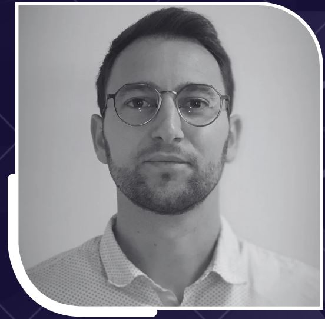

Accompagnement des dirigeants de TPE / PME industrielles
Structurer l'organisation, clarifier les décisions et retrouver une maîtrise durable de l'entreprise.
Prendre rendez-vousLa prise de rendez-vous s'effectue via Microsoft Bookings
Situations fréquentes chez les dirigeants
- L'entreprise repose encore excessivement sur le dirigeant
- Manque de lisibilité organisationnelle ou financière
- Décisions structurantes difficiles à prioriser
- Outils et process devenus inadaptés

Mon approche
Mon accompagnement vise d'abord à clarifier les décisions structurantes, avant de parler d'outils ou de méthodes.

Qui suis-je
Dirigeant de PME industrielle depuis plus de 18 ans, j'ai vécu de l'intérieur les enjeux quotidiens du dirigeant.
J'accompagne ceux qui veulent reprendre la main sur leur organisation et bâtir une entreprise moins dépendante d'eux.
Un accompagnement fondé sur la lucidité, la confiance et l'implication directe.
Échanger sur votre situation
Planifier un échangeMentions légales
ECLAT – SARL – SIREN 505 230 516
8 chemin des Épinettes – 85000 La Roche-sur-Yon
Responsable : Thomas Cantin – t.cantin@groupe-cantin.fr
Hébergement : GitHub Pages – GitHub, Inc.